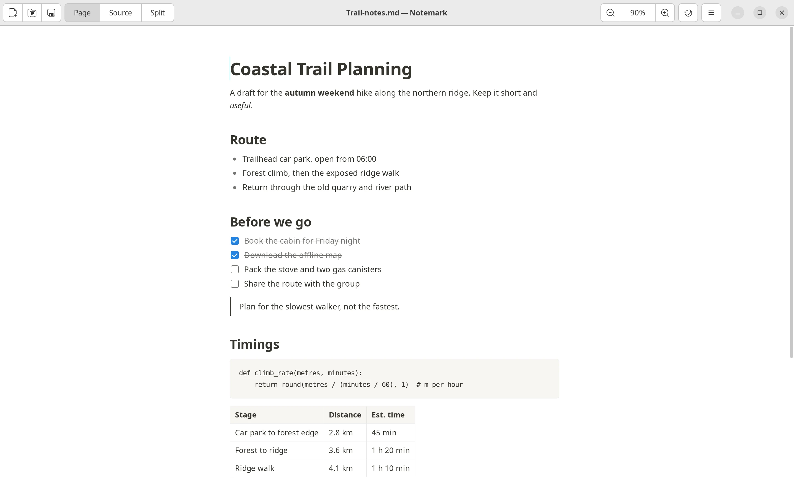
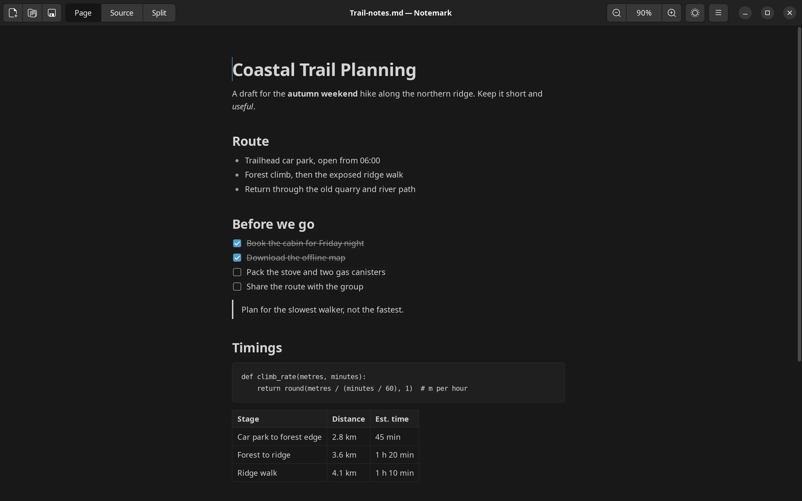
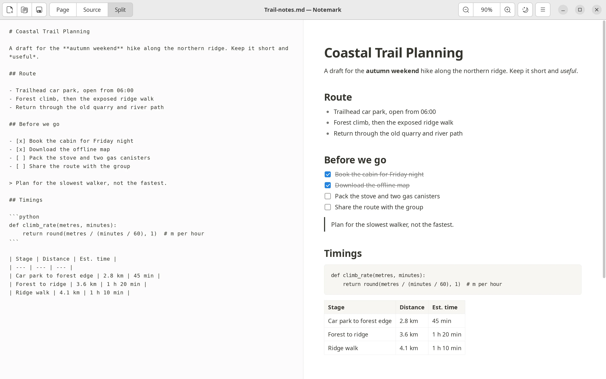
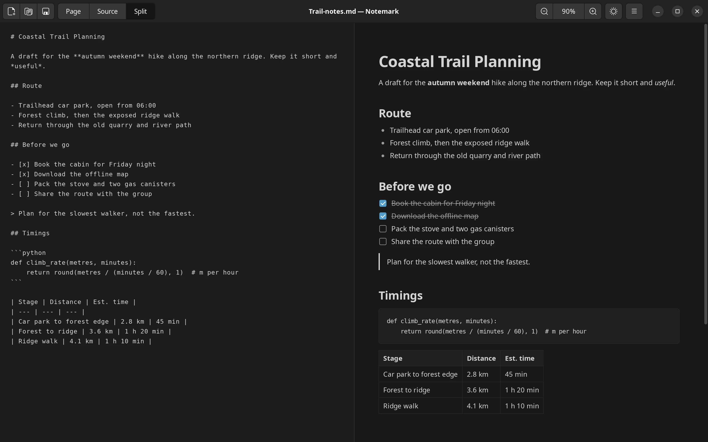
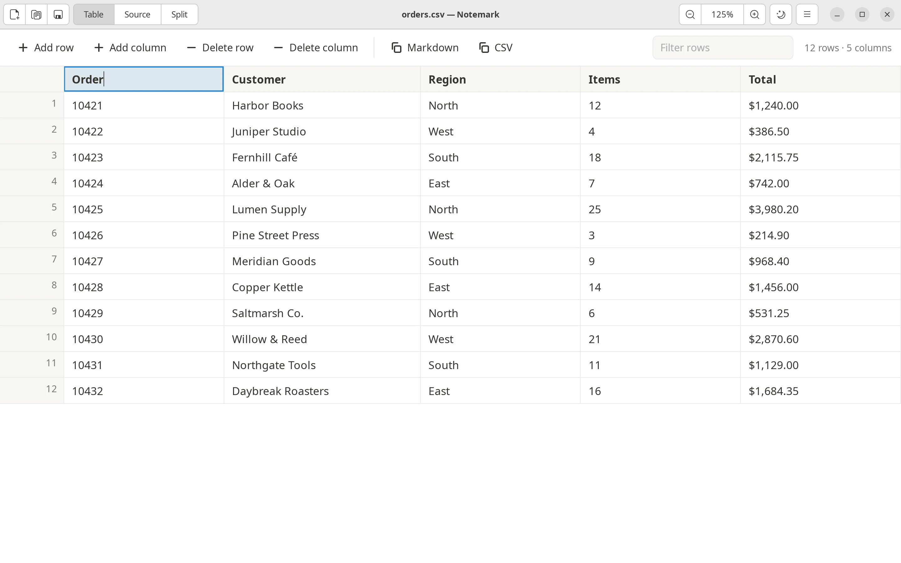
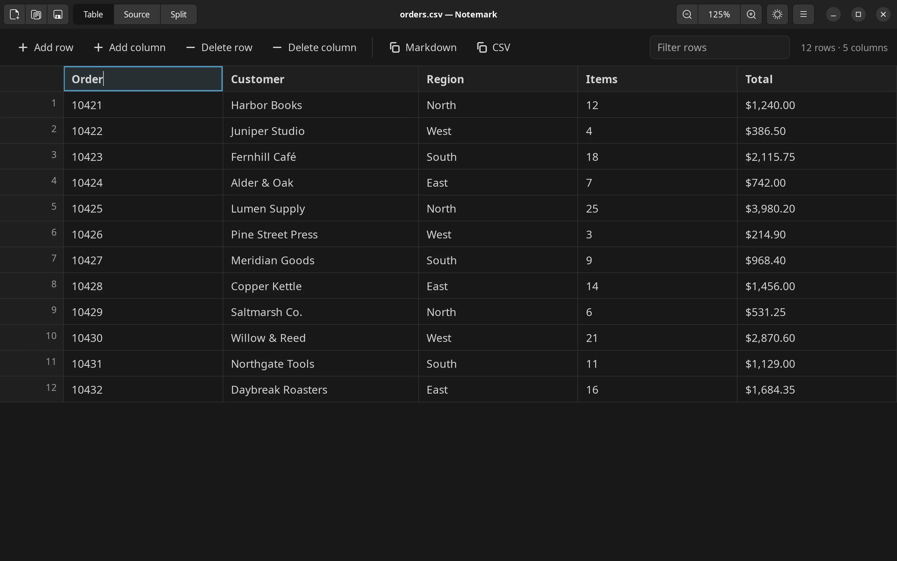

Notemark 0.3.0 for Linux
Notemark 0.3.0 for Linux
Type into the page. Keep plain Markdown.
A Notion-style Markdown editor for Linux. The rendered page is the editor, Markdown shortcuts convert as you type, and your notes stay as plain .md files.
No Electron, no accounts, no sync. A single Python file driving GTK 3 and WebKitGTK; the installed package is under 250 KB.


Features
Everything in the page, nothing in the way.
Write in formatted text and let Notemark keep the Markdown underneath.
Page mode
A WYSIWYG editor over Markdown. Headings stay headings while you write, and nothing re-renders or shifts under the cursor.
Markdown shortcuts
#for a heading,-for a bullet,1.for a numbered item,[]for a task,>for a quote,```for code and---for a rule. Enter on an empty line leaves a list, quote or code block.Source and split modes
Edit raw Markdown, or both views side by side with two-way synchronisation. The editor can sit left, right, above or below the page.
Tabs
Every file opens in its own tab and keeps its own view, cursor, scroll position and undo history. Drag to reorder, middle-click to close, right-click for more.
CSV and TSV tables
Open as an editable table: add, delete and move rows and columns, sort and filter, paste a block of cells, and switch to the raw text.
Settings
Press Ctrl+, for the theme, source editor size, default view, split layout, the status bar, and reopening your files on the next launch.
Light and dark themes
Follows the desktop colour scheme on first launch, and remembers your choice after that.
Zoom
From 50 to 300 percent, with the toolbar, keyboard, or Ctrl and the scroll wheel.
Plain files
Clickable task checkboxes rewrite the Markdown. Export to a self-contained HTML file. Word and character count, an unsaved-changes guard, and registration as a handler for
.mdfiles.
Screenshots
One editor, three views.
Switch between page, split and CSV table, in light or dark.
Page mode: edit the formatted text directly.


Split mode: raw Markdown and the page side by side, kept in sync both ways.


CSV and TSV files open as an editable table.
Install
Pick your way in.
Notemark needs Python 3.8 or newer, PyGObject, GTK 3 and WebKitGTK 4.1. Every mainstream desktop Linux ships these, and the Debian package pulls them in automatically.
APT repository (Debian, Ubuntu, Mint, Pop!_OS)
Add the signing key and the repository, then install. Updates then arrive with your normal system updates.
curl -fsSL https://notemark.forhad.me/apt/notemark.gpg | sudo tee /usr/share/keyrings/notemark.gpg > /dev/null
echo "deb [signed-by=/usr/share/keyrings/notemark.gpg] https://notemark.forhad.me/apt stable main" | sudo tee /etc/apt/sources.list.d/notemark.list
sudo apt update && sudo apt install notemarkUpdate later:
sudo apt update && sudo apt upgradeRemove it, then delete the two files you added:
sudo apt remove notemark
sudo rm /etc/apt/sources.list.d/notemark.list /usr/share/keyrings/notemark.gpg.deb from GitHub releases
Download notemark_<version>_all.deb from the latest release and install it:
sudo apt install ./notemark_0.3.0_all.debAppImage (any distribution, no installation)
Download Notemark-<version>-x86_64.AppImage from the latest release, make it executable and run it:
chmod +x Notemark-0.3.0-x86_64.AppImage
./Notemark-0.3.0-x86_64.AppImageThe AppImage carries Notemark itself and uses GTK, WebKitGTK and PyGObject from the host system. If they are missing it prints the exact package names to install for your distribution.
Portable tarball (no root, or a portable tree)
Download notemark-<version>-linux.tar.gz from the latest release. It runs in place or installs without root:
tar -xzf notemark-0.3.0-linux.tar.gz
cd notemark-0.3.0
./notemark sample.md # run without installing
./install.sh # or install into ~/.local
sudo ./install.sh /usr/local # or system-wideRun ./uninstall.sh with the same prefix to remove it.
Usage
Open files, start typing.
Open files from the toolbar (pick several at once), or pass them on the command line:
notemark notes.md data.csvTabs
Every file opens in its own tab with its own view, cursor, scroll position and undo history. Reorder by dragging, close with the button, middle-click or Ctrl+W, and switch with Ctrl+Tab or Alt+1 to Alt+9. A tab with unsaved changes asks before it closes. Open a file or move a tab into a new window (Ctrl+Shift+N) to see two side by side.
CSV and TSV
CSV and TSV files open as an editable table with sorting, filtering, row and column editing, pasting a block of cells and a raw-text view. Use “New CSV Table” in the menu to start one.
Settings
Press Ctrl+,. Settings are stored in ~/.config/notemark/settings.json, and the files open when you quit in ~/.config/notemark/session.json. Only saved files are reopened; an untitled tab is not.
Keyboard shortcuts
| Shortcut | Action |
|---|---|
| Ctrl+N or Ctrl+T | New tab |
| Ctrl+Shift+N | New window |
| Ctrl+O, Ctrl+S | Open, save |
| Ctrl+Shift+S | Save as |
| Ctrl+W | Close tab |
| Ctrl+Tab, Ctrl+Shift+Tab | Next, previous tab |
| Alt+1 to Alt+9 | Go to a tab (9 is the last) |
| Ctrl+Shift+C | Copy the file path |
| Ctrl+, | Settings |
| Ctrl+Z, Ctrl+Shift+Z, Ctrl+Y | Undo, redo |
| Ctrl+1, Ctrl+2, Ctrl+3 | Page, source, split mode |
| Ctrl+E | Toggle page and source |
| Ctrl+Shift+L | Toggle dark mode |
| Ctrl++, Ctrl+-, Ctrl+0 | Zoom in, out, reset |
| Ctrl and scroll | Zoom |
| Ctrl+B, Ctrl+I, Ctrl+` | Bold, italic, inline code |
| Ctrl+K, Ctrl+Shift+X | Link, strikethrough |
| Tab, Shift+Tab | Indent, outdent a list item |
| Shift+Enter | Line break within a block |
| Ctrl and click | Open a link |
| Ctrl+Q | Quit |
Build
Build from source and test.
Clone the repository and run it from the source tree:
git clone https://github.com/forhadkhan/notemark.git
cd notemark
make run FILE=sample.mdRuntime dependencies, by distribution:
| Distribution | Command |
|---|---|
| Debian, Ubuntu | sudo apt install python3-gi gir1.2-gtk-3.0 gir1.2-webkit2-4.1 |
| Fedora | sudo dnf install python3-gobject gtk3 webkit2gtk4.1 |
| Arch | sudo pacman -S python-gobject gtk3 webkit2gtk-4.1 |
| openSUSE | sudo zypper install python3-gobject gtk3 libwebkit2gtk-4_1-0 |
Packages
make deb # dist/notemark_<version>_all.deb
make appimage # dist/Notemark-<version>-x86_64.AppImage
make tarball # dist/notemark-<version>-linux.tar.gz
make dist # all threeBuilding the Debian package needs dpkg-deb. Building the AppImage downloads appimagetool into build/tools on first use.
Tests
make testThe suite loads the editor into an offscreen WebKit view and drives it the way a person would, then asserts on the Markdown that comes back out. An X display is required.
Changelog
What changed.
Version 0.2.0 added tabs, new windows, CSV and TSV tables, a Settings dialog, split layouts and session restore. Read the full history in the changelog or on the releases page.
About
Author and licence.
Licence
MIT. See LICENSE. Bundled libraries, all MIT licensed: marked, Turndown and turndown-plugin-gfm.